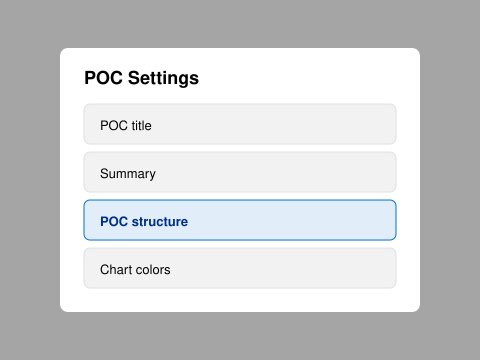
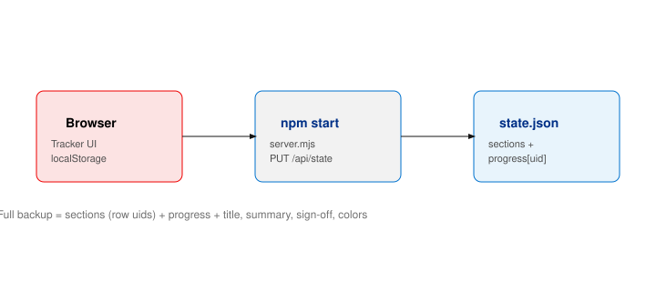

What it does
- Single-page app for POC / evaluation criteria across workstreams
- Import from Google Doc, markdown, or build in the browser
- Done checkboxes with timestamps, charts, and a completion timegraph
- POC Settings — title, summary, structure, colors
- Email report (HTML copy/download) and sign-off sheet (print/PDF)
- Backup / restore full state for another machine or after clearing browser data
Quick start
git clone https://github.com/anseifert/poc-tracker.git
cd poc-tracker
npm install
npm startOpen http://localhost:8081
Or: docker compose up --build
- Port default: 8081
- Progress syncs to
state.jsonon the server - Auto backup:
state.json.backupevery 5 minutes
Home screen — get criteria in
- Set optional POC title and status colors
- Google Doc — URL import (needs server) or upload
.md - Markdown — paste or file
- Build here — full-screen structure editor
- Use the Google Doc template (File → Make a copy)

Google Doc → workstreams
| In downloaded Markdown | Becomes |
|---|---|
# POC Doc - Kubernetes | Workstream tab |
## / ### headings | Sections inside the tab |
| Tables | Criteria rows |
| Status column | Editable like Notes; drives styling |
After import: Approve workstreams — select tabs, rename, then Import selected.
Main tracker UI
- Stats — total, completed, open, % complete
- Chart — completed / in progress / open per workstream
- Summary — read-only paragraph (edit in POC Settings)
- Workstream tabs — one per imported stream with rows
- Table — Done · criteria columns · Status/Notes
- Footer — last saved + Saved and synced when using
npm start
Marking criteria complete
- Check Done → records
progress[uid].completed, timestamp, and log entry - Status/notes can show Completed (or type it) — same outcome when aligned
- Unchecking clears completion text and logs reopened
- Each row has a stable
uid— required for backup/restore
Per-tab: Hide completed rows in this tab. Menu: show/hide all completed.
Hamburger menu

- Reset all data
- Show / hide completed rows
- Email report…
- POC Settings
- View timegraph…
- POC sign-off sheet…
- Download backup (JSON)
- Restore from backup…
POC Settings hub

- POC title — header, reports, sign-off
- Summary — narrative below the chart
- POC structure — workstreams, sections, columns, rows (warning if progress exists)
- Chart colors — completed / in-progress styling
- Sub-screens use ← POC Settings to return
Build here (structure editor)
- Add/rename workstreams, sections, table columns
- Add/delete rows; drag to reorder
- Save loads the normal tracker with tabs and chart
- Same editor opens from POC Settings → POC structure
Email report

- Scope: this tab or all workstreams
- Filter: only completed · only incomplete · send everything
- Preview report → Copy HTML or Download HTML
- Paste into email body (status feedback on copy)
Completion timegraph

- Timeline of check-offs (cumulative line + individual events)
- Export JSON or CSV — log only, not a full POC restore
POC sign-off sheet

- Completion overview (overall + per workstream)
- Editable attestation text
- Signatories from Owner columns + manual entries
- Optional block until 100% complete
- Download HTML or Print / Save as PDF
Backup & restore
| Mechanism | Use |
|---|---|
| Menu → Download backup (JSON) | Portable full state |
state.json on server | Live sync with npm start / Docker |
state.json.backup | Automatic server snapshot |
| Menu → Restore from backup… | Replace criteria + all checkoffs |
Re-importing a Google Doc on a blank POC creates new row IDs — use a full backup to move progress.
How state is stored

sections.*.rows[].uid must match keys in progress for checkboxes to restore correctly.
Component map
| UI area | Components |
|---|---|
| Import | Title/colors · Google / Markdown / Build tabs · Approve workstreams |
| Tracker | Stats · chart · summary · tabs · criteria table · footer sync |
| Modals | Settings hub · title · summary · structure editor · chart colors |
| Reports | Email report · timegraph · sign-off |
| Data | Backup / restore · reset · localStorage + state.json |
| Server | server.mjs · Google Doc import API · PUT state |